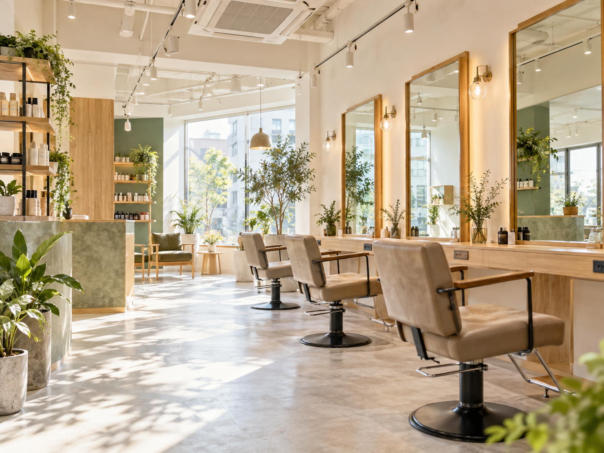
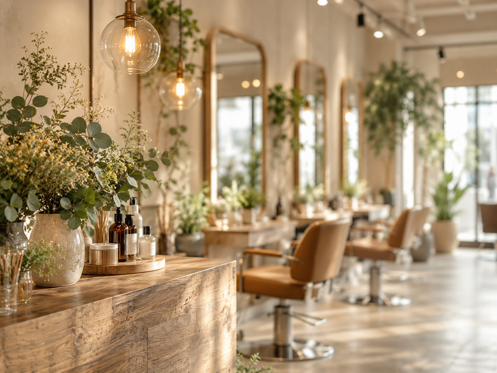
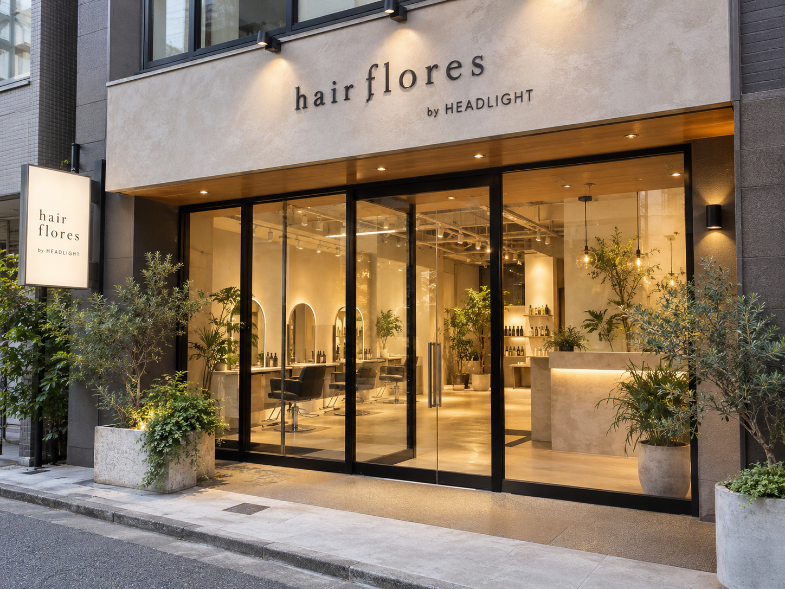

丁寧なカウンセリングで理想を共有
希望が固まっていない状態でも、ヒアリングと提案を通して方向性を一緒に整えてもらえたという声があります。
hair flores by HEADLIGHT / kawasaki
実際に寄せられた口コミから見えてきたのは、
希望を急がせず、会話しながら似合うを整えていく姿勢でした。

concept
hair flores by HEADLIGHT 川崎店は、
一人ひとりの髪の悩みや理想を丁寧に聞きながら、
ライフスタイルや今の気分に寄り添って、扱いやすいスタイルへ整えていく印象が口コミから見えてきます。
「希望が固まっていない」「似合う長さを相談したい」——そんな気持ちのままでも、会話を重ねながら形にしていけるサロンです。
why flores
保存済み口コミの内容をもとに、店舗固有の傾向を整理しています。
希望が固まっていない状態でも、ヒアリングと提案を通して方向性を一緒に整えてもらえたという声があります。
長さや量、前髪などを途中で確認しながら微調整でき、安心して任せられたという口コミが見られます。
縮毛矯正やヘアケア、今後のケア方法まで相談でき、アドバイスが参考になったという評価があります。
店内の綺麗さや、リラックスして過ごせる空気感に触れる口コミもあり、初めてでも入りやすい印象があります。

style & service
口コミで利用が確認できたメニュー傾向を紹介します。
顔周り・長さ・量などを相談しながら、扱いやすさへつなげるスタイルづくり。
希望の色味や画像イメージを共有しながら、理想に近づけていく印象です。
髪の悩みやストレート施術への不安、今後のケアについても相談しやすいという声があります。
customer voice
原文の意味を変えない範囲で、読みやすく要約しています。
希望が固まっていなくても、雰囲気やなりたい方向を一緒に整理してもらえたという声がありました。
口コミID 246・20代前半長さや量を細かく相談しながら切ってもらえたことで、安心して任せられたという声が見られます。
口コミID 269・20代前半ヘアケアや今後のケア方法まで丁寧に説明してもらえ、店内も心地よくリラックスできたという口コミがあります。
口コミID 266・20代後半salon atmosphere
口コミでも触れられていた、落ち着きのある空気感をイメージしたビジュアルです。

※掲載写真はすべてAIによるイメージです。実際の店舗内観・外観・スタッフ・施術実例ではありません。